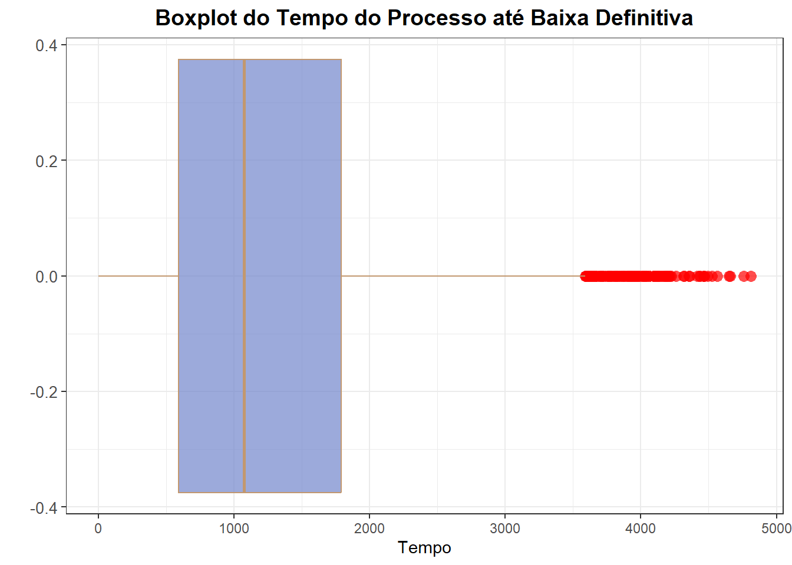
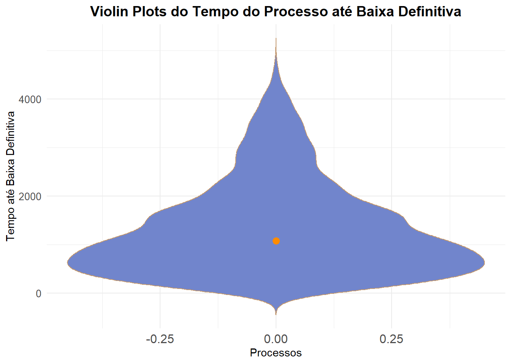
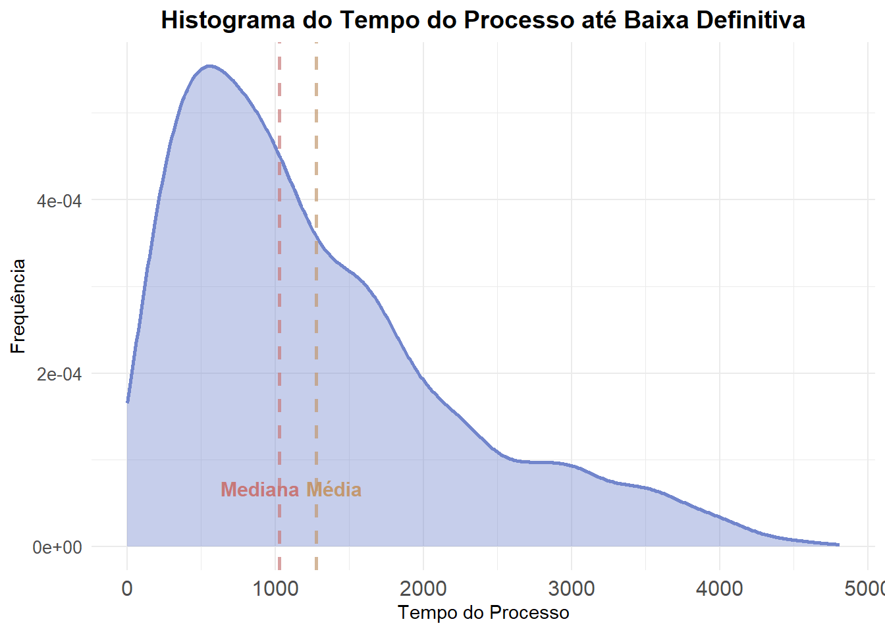
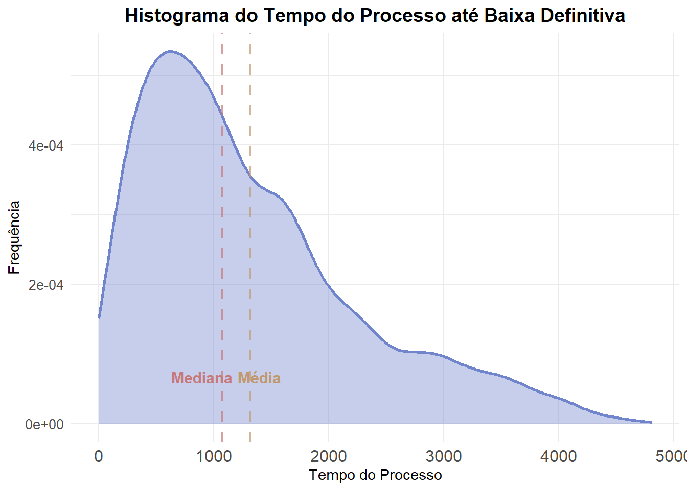
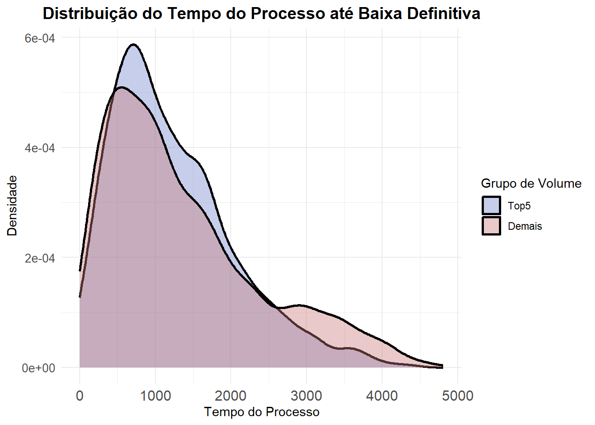

# Bibloitecas Necessárias
library(tidyverse)
library(httr)
library(jsonlite)
# Definindo a Chave de Acesso
headers = c(
'Authorization' = 'APIKey cDZHYzlZa0JadVREZDJCendQbXY6SkJlTzNjLV9TRENyQk1RdnFKZGRQdw==',
'Content-Type' = 'application/json'
)
# Extraindo os dados do DataJud
## Classe 282 e grau G1 (1º Grau)
body = '{
"size": 8930,
"query": {
"bool": {
"must": [
{"match": {"classe.codigo": 282}},
{"match": {"grau": "G1"}}
]
}
}
}'
## Do Tribunal de Justiça do Tocantins
POST(url = "https://api-publica.datajud.cnj.jus.br/api_publica_tjto/_search", body = body, add_headers(headers),
write_disk("juri.json"))
## Importanto o dado
juri <- fromJSON("juri.json")
save(juri, file = "juri.rds")8 Aula Prática: Coleta e Análise de Dados sobre Homicídio Qualificado
8.1 Introdução à Aula Prática: Coleta de Dados no DataJud
Nesta aula prática, vamos aprender como coletar dados processuais utilizando a Base Nacional de Dados do Poder Judiciário (DataJud), mantida pelo Conselho Nacional de Justiça (CNJ). O DataJud é o sistema responsável pelo armazenamento centralizado de dados e metadados de todos os processos judiciais brasileiros, físicos ou eletrônicos, e será a base que utilizaremos ao longo do curso.
8.2 Acesso ao DataJud
O DataJud pode ser acessado diretamente no site do CNJ 🔗:
https://www.cnj.jus.br/sistemas/datajud/
A plataforma fornece dados atualizados para diversos os ramos da Justiça brasileira, agrupados e padronizados para permitir análises estatísticas e jurimétricas.
8.3 Autenticação e Chave Pública
Para acessar os dados via API, utilizaremos a API Pública do DataJud, documentada em:
https://datajud-wiki.cnj.jus.br/api-publica/
A autenticação é feita por meio de uma chave pública, disponibilizada pelo DPJ/CNJ. A chave 🔑 pode ser obtida no seguinte endereço:
https://datajud-wiki.cnj.jus.br/api-publica/acesso
Essa chave será utilizada diretamente no código em R (ou Python), permitindo realizar consultas autenticadas aos dados processuais.
8.4 Endpoints, Rotas e Seleção de Tribunais
Para realizar nossas consultas, precisamos escolher os endpoints disponíveis, indicando o tribunal desejado. Os endpoints estão detalhados em:
https://datajud-wiki.cnj.jus.br/api-publica/endpoints
É possível consultar processos de de diversos ramos da Justiça brasileira:
- Tribunais Superiores
- Justiça Federal
- Justiça Estadual
- Justiça do Trabalho
- Justiça Eleitoral
- Justiça Militar
No nosso estudo, utilizaremos os dados do Tribunal de Justiça do Tocantins (TJTO).
8.5 Tipos de Consultas Possíveis
A API permite diferentes modalidades de consulta 🔍, como:
- Pesquisa por número do processo
- Pesquisa paginada
- Pesquisa por classe
- Pesquisa por assunto
- …
O DataJud também disponibiliza exemplos de código em Python e R, acessíveis na aba de exemplos:
8.6 Glossário de Variáveis
O DataJud define nomes específicos para cada uma das variáveis retornadas pela API. O significado de cada termo pode ser consultado no glossário oficial:
https://datajud-wiki.cnj.jus.br/api-publica/glossario
Esse glossário é essencial para interpretar corretamente os dados coletados.
8.7 Seleção do Assunto de Interesse
Em geral, ao iniciar uma pesquisa empírica, precisamos definir o assunto processual a ser analisado. Para isso, utilizamos o Sistema de Gestão de Tabelas Processuais Unificadas:
https://www.cnj.jus.br/sgt/consulta_publica_assuntos.php
No nosso caso, o foco inicial seria Direito Penal/Crimes Contra a Vida, que inclui subcategorias como:
- 10915 — Aborto
- 12091 — Feminicídio
- 12130 — Homicídio Agravado pela Prática de Extermínio de Seres Humanos
- 3371 — Homicídio Privilegiado
- 3372 — Homicídio Qualificado
- 15177 — Homicídio Qualificado Contra Menor de 14 Anos (Lei Henry Borel)
- 3370 — Homicídio Simples
- 3373 — Induzimento, Instigação ou Auxílio a Suicídio
- 3375 — Infanticídio
Poderíamos escolher todas ou algumas dessas categorias para nossa análise.
8.8 Escolha Alternativa: Pesquisa por Classe
Nesta aula, porém, seguiremos um caminho alternativo: em vez de selecionar um assunto específico, trabalharemos com a classe processual.
Selecionamos o seguinte ramo:
Processo Criminal → Procedimento Comum → Ação Penal de Competência do Júri
Código: 282
Essa classe captura processos de crimes dolosos contra a vida julgados pelo Tribunal do Júri, alinhados ao nosso objetivo analítico. Entretanto, muitos dos assuntos acima listados estarão presentes. Alám disso, limitamos os nossos processos à Instância de 1º Grau (G1).
8.9 Fase Muito Importante
A etapa que descrevemos até aqui é fundamental em qualquer pesquisa empírica que utilize o DataJud ou outras bases de dados judiciais. As escolhas feitas nesta fase, como a definição do assunto, da classe processual e dos critérios de filtragem, influenciam diretamente o desenho amostral que construiremos.
Uma boa seleção inicial garante maior precisão, consistência e relevância dos resultados. Por isso, é essencial conduzir essa etapa com atenção, calma e organização. Quanto mais cuidadosa for a definição desses parâmetros, melhor será a qualidade da extração dos dados e, consequentemente, das análises que realizaremos nas próximas fases do curso.
8.10 Colocando a Mão na Massa: Coleta de Dados no DataJud
8.10.1 Extraíndo os Dados Processuais
O código abaixo extrairá os dados da classe 282 do grau G1 do Tribunal de Justiça do Tocantins e salvará todas essas informações em um dataframe chamado juri.json.
Agora vamos analisar a estrutura do arquivo juri.json para identificar onde cada informação relevante está localizada. Esse mapeamento é essencial porque nos permite compreender exatamente como os dados estão organizados e, assim, definir qual tipo de extração precisamos realizar para trabalhar com informações de movimentação, órgãos julgadores, assuntos e outras características presentes no arquivo.
# Pacotes Necessários
library(tidyverse)
library(httr)
library(jsonlite)
## Importanto o dado
load("juri.rds")
# 1. Verifica a classe do objeto (ex.: list, data.frame)
class(juri)
# 2. ver nomes/elementos de topo
names(juri) # se for lista ou data.frame, mostra colunas/elementos
length(juri) # número de elementos/top-level items
# 3. Exibe a estrutura do objeto; max.level evita saída muito grande
str(juri, max.level = 4)
# 4.Extrai os dados principais: hits -> hits -> _source - Aqui estão os dados de interesse
## Cada nível corresponde a um ramo interno do JSON
dados_basicos <- juri |>
pluck("hits","hits","_source")8.10.2 Analisando as Informações Extraídas
Órgão Julgador dos Processos
Vamos criar um banco que contenha o número do processo e o órgão julgador responsável por cada caso. Em seguida, analisaremos a frequência de processos por órgão julgador, tanto considerando apenas processos únicos quanto incluindo processos duplicados.
# Pacote que padroniza os nomes das variáveis
library(janitor)
library(dplyr)
library(tidyr)
# Criar um dataframe com número do processo e órgão julgador
julgador <- dados_basicos |>
select(processo = numeroProcesso, orgaoJulgador) |> # Faço a seleção e renomeio a coluna
unnest(orgaoJulgador) |> # Como orgaoJulgador é um dataframe, preciso "desempacotar" os dados
janitor::clean_names() # Deixo os nomes padronizados
nrow(julgador) # número total de processos[1] 8432Observa-se um total de 8432 processos, mas alguns podem estar duplicados. Vamos investigar essa questão. Abaixo está o código para identificar e analisar processos únicos e duplicados.
# Vamos verificar se existem processos duplicados.
julgador_uni <- julgador %>%
distinct(processo, .keep_all = TRUE)
nrow(julgador_uni) # numero total de processos únicos[1] 8287nrow(julgador) - nrow(julgador_uni) # número de processos duplicados[1] 145# Vamos analisar os processos duplicados
julgador_dup <- julgador %>%
filter(duplicated(processo) | duplicated(processo, fromLast = TRUE))
## Esse comando pega todas as linhas após a primeira ocorrência ou
## Pega todas as linhas antes da última ocorrência e verifica duplicação
## Vamos ver quantos processos duplicados temos:
nrow(julgador_dup) # número de processos duplicados[1] 289unique(julgador_dup$processo) |> length() # número de processos únicos que estão duplicados[1] 144O total de processos únicos foi de 8.287, e identificamos 144 processos duplicados. Agora, vamos verificar se essas duplicações ocorreram em razão de alguma mudança de órgão julgador. Para isso, vamos pivotar os dados e criar uma variável que indique se houve alteração no órgão julgador para cada processo duplicado.
## Analisando se houve troca de orgaõ julgador e por isso é duplicado
# 1. Criar ordem dentro de cada processo 1, para primeira vez e 2 para a segunda vez....
julgador_dup_ord <- julgador_dup %>%
group_by(processo) %>%
mutate(orgao_id = row_number()) %>%
ungroup()
# 2. Pivotar para formato wide, selciono e indico o nome que será dado
julgador_wide <- julgador_dup_ord %>%
select(processo, orgao_id, nome) %>%
pivot_wider(
names_from = orgao_id,
values_from = nome,
names_prefix = "julgador"
)
# 3. Variável indicando mudança
julgador_wide <- julgador_wide %>%
rowwise() %>%
mutate(
mudou_orgao = n_distinct(c_across(starts_with("julgador")), na.rm = TRUE) > 1
) %>%
ungroup()
# - > pega todas as colunas cujo nome começa com "julgador", transforma em vetores e verifica se é distinto
julgador_wide %>%
count(mudou_orgao, sort = TRUE) %>%
mutate(
mudou_orgao = ifelse(mudou_orgao, "Sim", "Não")
) %>%
knitr::kable(
caption = "Frequência de processos que mudaram de órgão julgador"
)| mudou_orgao | n |
|---|---|
| Não | 93 |
| Sim | 51 |
Observamos que 93 processos não mudaram de órgão julgador e 51 passaram por alteração. Agora precisamos definir como trataremos esses casos: se consideraremos apenas o órgão julgador final, se adotaremos o órgão julgador inicial como referência ou excluímos. Mas ainda precisamos observar que há 93 processos que aparecem duplicados, mesmo sem mudança de órgão julgador. O que pode estar acontecendo nesses casos?
LIMPEZA DOS DADOS
Escolha e Justificativa
Motivos Possíveis: Recursos, mudanças para varas expecializadas, desclassificação, desforamento, entre outros.
Escolha: Vamos excluir os processos que mudaram de órgão julgador, mantendo apenas aqueles que permaneceram no mesmo órgão. Depois analisaremos os processos duplicados restantes.
Justificativa: A mudança de órgão julgador pode indicar transferências ou redistribuições que podem afetar a análise do tempo do processo. Para garantir a consistência dos dados e evitar vieses, mantemos somente aqueles permaneceram no mesmo órgão julgador ao longo do tempo.
# Vamos retirar os processos que mudaram de orgão julgador
db_limpo <- dados_basicos %>%
anti_join(julgador_wide %>% filter(mudou_orgao == TRUE),
by = c("numeroProcesso" = "processo"))Vamos focar nos processos únicos para analisar a frequência de órgãos julgadores e descrever os resultados graficamente e em tabelas.
library(ggplot2)
library(dplyr)
library(gt)
freq_j_u <- julgador_uni %>%
count(nome) %>%
arrange(desc(n)) %>%
mutate(perc = round(100 * n / sum(n), 1))
ggplot(freq_j_u, aes(x = reorder(nome, n), y = n)) +
geom_col(fill = "#7185cc", color = "white", alpha = 0.7) +
coord_flip() +
labs(
title = "Frequência por Órgão Julgador (Processos Únicos)",
x = "Órgão Julgador",
y = "Frequência"
) +
theme_classic()+
theme(
axis.text.y = element_text(size = 4) # tamanho da letra das categorias
)
freq_j_u |>
gt() |>
tab_header(
title = "Frequência por Órgão Julgador (Processos Únicos)"
) |>
cols_label(
nome = "Órgão Julgador",
n = "Frequência",
perc = "Percentual"
)| Frequência por Órgão Julgador (Processos Únicos) | ||
|---|---|---|
| Órgão Julgador | Frequência | Percentual |
| Juízo da 1ª Vara Criminal de Araguaína | 965 | 11.6 |
| Juizo da 1ª Vara Criminal de Palmas | 846 | 10.2 |
| Juizo da Especializada no Combate à Violência Contra a Mulher e Crimes Dolosos Contra a Vida de Guru | 725 | 8.7 |
| Juízo da 1ª Vara Criminal de Porto Nacional | 477 | 5.8 |
| Juízo da 1ª Vara Criminal de Colinas do Tocantins | 419 | 5.1 |
| Juízo da 1ª Vara Criminal de Paraíso do Tocantins | 326 | 3.9 |
| Juízo da 2ª Vara de Augustinópolis | 309 | 3.7 |
| Juízo da 1ª Vara Criminal de Tocantinópolis | 294 | 3.5 |
| Juízo da 1ª Escrivania Criminal de Itaguatins | 271 | 3.3 |
| Juízo da Vara Criminal, de Violência Doméstica e Juizado Especial Criminal de Dianópolis | 254 | 3.1 |
| Juízo da 1ª Vara Criminal de Miracema do Tocantins | 216 | 2.6 |
| Juízo da 1ª Escrivania Criminal de Colméia | 189 | 2.3 |
| Juízo da Vara Criminal, de Violência Doméstica e Juizado Especial Criminal de Araguatins | 178 | 2.1 |
| Juízo da 1ª Vara Criminal de Guaraí | 177 | 2.1 |
| Juízo da 1ª Escrivania Criminal de Peixe | 163 | 2.0 |
| Juízo da 2ª Vara da Comarca de Cristalândia | 160 | 1.9 |
| Juízo da 1ª Vara Criminal de Taguatinga | 157 | 1.9 |
| Juízo da 1ª Escrivania Criminal de Natividade | 154 | 1.9 |
| Juízo da 1ª Escrivania Criminal de Goiatins | 151 | 1.8 |
| Juízo da 1ª Escrivania Criminal de Formoso do Araguaia | 144 | 1.7 |
| Juízo da 1ª Vara Criminal de Pedro Afonso | 123 | 1.5 |
| Juízo da 1ª Vara Criminal de Arraias | 121 | 1.5 |
| Juízo da 1ª Escrivania Criminal de Miranorte | 113 | 1.4 |
| Juízo da 1ª Escrivania Criminal de Novo Acordo | 113 | 1.4 |
| Juízo da 1ª Escrivania Criminal de Wanderlândia | 113 | 1.4 |
| Juízo da 1ª Escrivania Criminal de Xambioá | 113 | 1.4 |
| Juízo da 1ª Escrivania Criminal de Ananás | 98 | 1.2 |
| Juízo da 1ª Escrivania Criminal de Filadélfia | 95 | 1.1 |
| Juízo da 1ª Escrivania Criminal de Araguacema | 91 | 1.1 |
| Juízo da 1ª Escrivania Criminal de Araguaçu | 88 | 1.1 |
| Juízo da 1ª Escrivania Criminal de Ponte Alta | 87 | 1.0 |
| Juízo da 1ª Escrivania Criminal de Itacajá | 84 | 1.0 |
| Juízo da 1ª Escrivania Criminal de Alvorada | 82 | 1.0 |
| Juízo da 1ª Escrivania Criminal de Palmeiropolis | 70 | 0.8 |
| Juízo da 1ª Escrivania Criminal de Arapoema | 69 | 0.8 |
| Juízo da 1ª Escrivania Criminal de Paranã | 67 | 0.8 |
| Juízo da 1ª Vara Criminal de Dianópolis | 51 | 0.6 |
| Juízo da 1ª Escrivania Criminal de Cristalândia | 42 | 0.5 |
| Juízo da 1ª Vara Criminal de Araguatins | 35 | 0.4 |
| Juízo da 2ª Escrivania de Augustinópolis | 19 | 0.2 |
| Juízo da 1ª Escrivania Criminal de Figueirópolis | 10 | 0.1 |
| Juízo da 1ª Escrivania Criminal de Aurora | 9 | 0.1 |
| Juízo da Vara de Execuções Penais de Gurupi | 8 | 0.1 |
| Juízo da 1ª Escrivania Criminal de Pium | 7 | 0.1 |
| Juízo da 1ª Escrivania Criminal de Almas | 4 | 0.0 |
Questão
Como podemos fazer a nossa análise de movimento considerando que comarcas distintas possuem diferentes volumes de processos? Devemos agrupar as comarcas maiores e as menores? Quais critérios utilizar para isso? Deixamos varas criminais separada de especializadas?
Sistema dos Processos
Aqui avaliamos se os processos pertencem ao sistema sistema eletrônico de processos judiciais EPROC ou a outro sistema.
sistema <- db_limpo |>
select(processo = numeroProcesso, sistema) |>
unnest(sistema) |>
janitor::clean_names()
freq_sistema <- sistema %>%
count(nome) %>%
arrange(desc(n))
freq_sistema |>
gt() |>
tab_header(
title = "Frequência por Sistema (Processos Únicos)"
) |>
cols_label(
nome = "Sistema",
n = "Frequência",
)| Frequência por Sistema (Processos Únicos) | |
|---|---|
| Sistema | Frequência |
| EPROC | 8323 |
| Inválido | 4 |
| Outros | 2 |
Com base na tabela acima, podemos observar a distribuição dos processos entre os sistemas Eletrônico e Físico. Observa-se a existência somente de processos eletrônicos, mas 4 foram declaros inválidos e 2 Outros. O que fazer com esses casos? Devemos excluí-los da análise ou mantê-los?
LIMPEZA DOS DADOS
Escolha e Justificativa
Motivos Possíveis: Citação em outros estados, entre outros.
Escolha: Vamos excluir todos os processos que não são EPROC.
Justificativa: Não sabemos ao certo os motivos que levaram a um processo ser classificado como inválido ou outros. Além disso, não sabemos como essa classificação afeta a movimentação. Portanton, vamos excluir todos que não foram EPROC e deixar nossa amostra mais homogênea.
# Vamos retirar os processos que mudaram de orgão julgador
db_limpo <- db_limpo %>%
anti_join(sistema %>% filter(!nome == "EPROC"),
by = c("numeroProcesso" = "processo"))Formato do Processo
Aqui avaliamos se os processos são do tipo Eletrônico ou Físico.
formato <- db_limpo |>
select(processo = numeroProcesso, formato) |>
unnest(formato) |>
janitor::clean_names()
freq_formato <- formato %>%
count(nome) %>%
arrange(desc(n))
freq_formato |>
gt() |>
tab_header(
title = "Frequência por Formato (Processos Únicos)"
) |>
cols_label(
nome = "Formato",
n = "Frequência",
)| Frequência por Formato (Processos Únicos) | |
|---|---|
| Formato | Frequência |
| Eletrônico | 8322 |
Observa-se que 100% dos processos estão no formato Eletrônico. Dessa forma, não há necessidade de excluir nenhum processo com base nesse critério.
Classe Processual
Como fizemos nossa busca por classe processual, 282, deveríamos ter somente essa classe. Vamos verificar se há outras classes presentes nos dados.
classe <- db_limpo |>
select(processo = numeroProcesso, classe) |>
unnest(classe) |>
janitor::clean_names()
freq_classe <- classe %>%
count(nome) %>%
arrange(desc(n))
freq_classe |>
gt() |>
tab_header(
title = "Frequência por Classe (Processos Únicos)"
) |>
cols_label(
nome = "Classe",
n = "Frequência",
)| Frequência por Classe (Processos Únicos) | |
|---|---|
| Classe | Frequência |
| Ação Penal de Competência do Júri | 8322 |
Conforme esperado pela nossa consulta inicial, todos os processos pertencem à classe Ação Penal de Competência do Júri (282). Portanto, não há necessidade de excluir nenhum processo com base nesse critério.
Assuntos Processuais
Vamos extrair e analisar os assuntos processuais associados a cada processo. Vamos fazer a extração e veja que o resultado é uma coluna com processo e a outra com o assunto. Se tivermos mais assuntos por processo, esse será duplicado.
library(dplyr)
library(tidyr)
library(purrr)
library(janitor)
library(ggplot2)
library(gt)
# manter só linhas em que 'assuntos' é um data.frame
assuntos <- db_limpo |>
filter(map_lgl(assuntos, is.data.frame)) |>
select(processo = numeroProcesso, assuntos) |>
unnest(assuntos) |>
clean_names()
# Processos únicos
nrow(assuntos %>%
distinct(processo, .keep_all = TRUE)) # número total de processos únicos[1] 8228freq_assunto <- assuntos |>
count(nome) |>
arrange(desc(n)) |>
mutate(perc_assunto = round(100 * n / sum(n), 1)) |>
mutate(perc_processo = round(100 * n / 8228, 1)) # considerando processos únicos
ggplot(freq_assunto, aes(x = reorder(nome, n), y = n)) +
geom_col(fill = "#7185cc", color = "white", alpha = 0.7) +
coord_flip() +
labs(
title = "Frequência por Assunto (Processos Únicos)",
x = "Assunto",
y = "Frequência"
) +
theme_classic()+
theme(
axis.text.y = element_text(size = 4)) # tamanho da letra das categorias
freq_assunto |>
gt() |>
tab_header(
title = "Frequência dos Assuntos"
) |>
cols_label(
nome = "Assunto",
n = "Frequência",
perc_assunto = "% Assuntos",
perc_processo = "% Processos"
)| Frequência dos Assuntos | |||
|---|---|---|---|
| Assunto | Frequência | % Assuntos | % Processos |
| Homicídio Qualificado | 5933 | 52.5 | 72.1 |
| Crime Tentado | 2733 | 24.2 | 33.2 |
| Homicídio Simples | 1731 | 15.3 | 21.0 |
| Feminicídio | 362 | 3.2 | 4.4 |
| Violência Doméstica Contra a Mulher | 91 | 0.8 | 1.1 |
| Crimes do Sistema Nacional de Armas | 47 | 0.4 | 0.6 |
| Homicídio Privilegiado | 45 | 0.4 | 0.5 |
| Destruição / Subração / Ocultação de Cadáver | 28 | 0.2 | 0.3 |
| Promoção, constituição, financiamento ou integração de Organização Criminosa | 24 | 0.2 | 0.3 |
| Homicidio qualificado | 20 | 0.2 | 0.2 |
| Crimes contra a vida | 18 | 0.2 | 0.2 |
| Crimes Previstos no Estatuto da criança e do adolescente | 17 | 0.2 | 0.2 |
| Ameaça | 15 | 0.1 | 0.2 |
| Aborto provocado por terceiro | 14 | 0.1 | 0.2 |
| Crime / Contravenção contra Criança / Adolescente | 13 | 0.1 | 0.2 |
| Furto | 12 | 0.1 | 0.1 |
| Aborto provocado pela gestante ou com o seu consentimento | 10 | 0.1 | 0.1 |
| Crimes de Trânsito | 10 | 0.1 | 0.1 |
| Leve | 10 | 0.1 | 0.1 |
| Grave | 9 | 0.1 | 0.1 |
| Corrupção de Menores | 8 | 0.1 | 0.1 |
| Contra a Mulher | 7 | 0.1 | 0.1 |
| Fraude processual | 7 | 0.1 | 0.1 |
| Crime Culposo | 6 | 0.1 | 0.1 |
| Dano Qualificado | 6 | 0.1 | 0.1 |
| Roubo Majorado | 6 | 0.1 | 0.1 |
| Estupro de vulnerável | 5 | 0.0 | 0.1 |
| Falsidade ideológica | 5 | 0.0 | 0.1 |
| Falso testemunho ou falsa perícia | 5 | 0.0 | 0.1 |
| Recebimento | 5 | 0.0 | 0.1 |
| Seqüestro e cárcere privado | 5 | 0.0 | 0.1 |
| Tráfico de Drogas e Condutas Afins | 5 | 0.0 | 0.1 |
| Resistência | 4 | 0.0 | 0.0 |
| Violação a Sepultura | 4 | 0.0 | 0.0 |
| Violação de domicílio | 4 | 0.0 | 0.0 |
| Aborto qualificado | 3 | 0.0 | 0.0 |
| Adulteração de Sinal Identificador de Veículo Automotor | 3 | 0.0 | 0.0 |
| Coação no curso do processo | 3 | 0.0 | 0.0 |
| Crime de Descumprimento de Medida Protetiva de Urgência | 3 | 0.0 | 0.0 |
| Crimes de Tortura | 3 | 0.0 | 0.0 |
| Dano | 3 | 0.0 | 0.0 |
| Estupro | 3 | 0.0 | 0.0 |
| Furto Qualificado | 3 | 0.0 | 0.0 |
| Homicídio | 3 | 0.0 | 0.0 |
| Homicídio Agravado pela Prática de Extermínio de Seres Humanos | 3 | 0.0 | 0.0 |
| Latrocínio | 3 | 0.0 | 0.0 |
| Quadrilha ou Bando | 3 | 0.0 | 0.0 |
| Roubo | 3 | 0.0 | 0.0 |
| NA | 3 | 0.0 | 0.0 |
| Crimes Hediondos | 2 | 0.0 | 0.0 |
| Decorrente de Violência Doméstica | 2 | 0.0 | 0.0 |
| Incêndio | 2 | 0.0 | 0.0 |
| Infanticídio | 2 | 0.0 | 0.0 |
| Lesão leve | 2 | 0.0 | 0.0 |
| Associação para a Produção e Tráfico e Condutas Afins | 1 | 0.0 | 0.0 |
| Atentado Violento ao Pudor | 1 | 0.0 | 0.0 |
| Comunicação falsa de crime ou de contravenção | 1 | 0.0 | 0.0 |
| Crime / Contravenção contra Idoso | 1 | 0.0 | 0.0 |
| Crimes Previstos no Estatuto do Idoso | 1 | 0.0 | 0.0 |
| Crimes contra a Fauna | 1 | 0.0 | 0.0 |
| Denunciação caluniosa | 1 | 0.0 | 0.0 |
| Desacato | 1 | 0.0 | 0.0 |
| Descumprimento de Medida Protetiva de Urgência | 1 | 0.0 | 0.0 |
| Estelionato Majorado | 1 | 0.0 | 0.0 |
| Extorsão (art. 158) | 1 | 0.0 | 0.0 |
| Falsa identidade | 1 | 0.0 | 0.0 |
| Furto de coisa comum | 1 | 0.0 | 0.0 |
| Gravíssima | 1 | 0.0 | 0.0 |
| Induzimento, Instigação ou Auxílio a Suicídio | 1 | 0.0 | 0.0 |
| Injúria | 1 | 0.0 | 0.0 |
| Lesão Cometida em Razão da Condição de Mulher | 1 | 0.0 | 0.0 |
| Participação ilícita | 1 | 0.0 | 0.0 |
| Perseguição | 1 | 0.0 | 0.0 |
| Posse de Drogas para Consumo Pessoal | 1 | 0.0 | 0.0 |
| Receptação | 1 | 0.0 | 0.0 |
| Receptação Qualificada | 1 | 0.0 | 0.0 |
| Recurso | 1 | 0.0 | 0.0 |
| Sequestro ou cárcere privado | 1 | 0.0 | 0.0 |
| Vilipêndio a Cadáver | 1 | 0.0 | 0.0 |
| Violência Psicológica contra a Mulher | 1 | 0.0 | 0.0 |
Assuntos tem um total de 11302 processos, sendo que o número de processos únicos é 8228. Isso indica que muitos processos têm mais de um assunto associado. Então a leitura da tabela acima deve considerar esses números. Podemos dizer que 5933 processos tiveram Homicídio Qualificado como assunto, 2733 tiveram Crime Tentado, e assim por diante. Existe sobreposição entre os assuntos.
Fizemos duas colunas, uma com percentual com base no total de assuntos (11302), % Assuntos, e outra com base no total de processos únicos (8228), % Processos. A segunda coluna é mais interessante, pois indica a proporção de processos que tiveram cada assunto.
Agora vamos olhar o assunto por processo, para ver quantos assuntos cada processo tem associado.
library(dplyr)
library(tidyr)
assuntos_wide <- assuntos %>%
group_by(processo, nome) %>% # garante uma linha por processo-assunto
summarise(valor = 1, .groups = "drop") %>%
pivot_wider(
names_from = nome,
values_from = valor,
values_fill = list(valor = 0) # preenche com 0 se não ocorreu
)
assuntos_wide %>%
slice_head(n = 10) %>%
select(1:8) %>%
gt() %>%
tab_header(
title = "Assuntos por Processo (Exemplo)"
)| Assuntos por Processo (Exemplo) | |||||||
|---|---|---|---|---|---|---|---|
| processo | Homicídio Simples | Crime Tentado | Homicídio Qualificado | Corrupção de Menores | Feminicídio | Violência Doméstica Contra a Mulher | Homicídio Privilegiado |
| 00000059520148272720 | 1 | 0 | 0 | 0 | 0 | 0 | 0 |
| 00000067320168272732 | 0 | 1 | 1 | 0 | 0 | 0 | 0 |
| 00000072320198272742 | 1 | 1 | 0 | 0 | 0 | 0 | 0 |
| 00000080820148272734 | 1 | 0 | 0 | 0 | 0 | 0 | 0 |
| 00000081220218272718 | 0 | 0 | 1 | 1 | 0 | 0 | 0 |
| 00000109320198272736 | 1 | 0 | 0 | 0 | 0 | 0 | 0 |
| 00000121120208272742 | 1 | 0 | 0 | 0 | 0 | 0 | 0 |
| 00000123520158272726 | 1 | 0 | 0 | 0 | 0 | 0 | 0 |
| 00000137020178272719 | 0 | 0 | 1 | 0 | 0 | 0 | 0 |
| 00000170620248272738 | 0 | 1 | 1 | 0 | 0 | 0 | 0 |
Agora cada linha é um processo único com todos os assuntos listados. Tivemos um total de 8228. Para o tribunal do Juri tem-se 5 tipos penais: Homicídio Qualificado, Homicídio Simples, Infanticídio, Aborto, Induzimento ao Suicídio e a partir de outubro de 24 o Feminicídio.
Questão:
Devemos incluir todos os assuntos ou focar apenas em alguns? Quais critérios utilizar para essa seleção?
LIMPEZA DOS DADOS
Escolha e Justificativa
Escolha: Vamos trabalhar somente com homicídio Qualificado, Simples e Feminicídio.
Justificativa: Acreditamos que esse esses processos possuem um perfil semelhante entre si, e diferente do infanticídio, aborto e induzimento ao suicídio.
# Vamos retirar os processos que mudaram de orgão julgador
assuntos_wide_limpo <- assuntos_wide %>%
mutate(
homic_bin = if_any(
c(
"Homicídio Qualificado",
"Homicídio Simples",
"Feminicídio",
"Homicidio qualificado",
"Homicídio"
),
~ .x == 1
) * 1
)
db_limpo <- db_limpo %>%
anti_join(assuntos_wide_limpo %>% filter(homic_bin == 0),
by = c("numeroProcesso" = "processo"))
nrow(db_limpo) # número total de processos após limpeza[1] 7867nrow(db_limpo %>%
distinct(numeroProcesso, .keep_all = TRUE)) # número total de processos únicos[1] 7775Ao final do procedimento, observamos que o banco de dados original continha 8.432 processos. Após as etapas de limpeza e organização, chegamos a 7.867 registros. No entanto, ainda identificamos a existência de processos duplicados. O total de processos únicos é de 7.775, o que significa que permanecem 92 processos duplicados para os quais ainda precisamos definir um tratamento adequado.
LIMPEZA DOS DADOS
Escolha e Justificativa
Escolha: Excuir os processos duplicados.
Justificativa: Como não está claro o motivo dessa duplicação e quais seus impactos sobre a movimentação, vamos optar pela exclusão desses processos.Note que poderiamos identificar esses processos e fazermos uma análise mais detalhada sobre eles.
Motivos: Insidente de insanidade mental, por exemplo. Processo separado mas com mesmo número.
# Vamos retirar os processos que mudaram de orgão julgador
db_limpo <- db_limpo %>%
anti_join(julgador_dup,
by = c("numeroProcesso" = "processo"))Concluímos a limpeza com 7.683 processos, que serão a base da análise de movimentação. Antes de prosseguir, vamos reorganizar as tabelas anteriores de julgador, assunto e demais variáveis, usando agora apenas esse banco de dados limpo.
TABELAS FINAIS APÓS LIMPEZA DOS DADOS
Com os dados limpos vamos criar uma data.frame de julgados final. Nesse vamos deixar o processo, o órgão julgador, e criar variáveis que indiquem se o órgão é especializado ou não, e se está entre os 5 com maior volume de processos.
# Pacote que padroniza os nomes das variáveis
library(janitor)
library(dplyr)
library(tidyr)
# JULGADOR
julgador_final <- db_limpo |>
select(processo = numeroProcesso, orgaoJulgador) |>
unnest(orgaoJulgador) |>
janitor::clean_names()
# Alterando o nome para facilitar a leitura e excluindo o cod do IBGE
julgador_final <- julgador_final %>%
rename(orgao_julgador = nome) %>%
select(-codigo_municipio_ibge)
# Construindo a tabela final do orgão julgador
freq_j_f <- julgador_final %>%
count(orgao_julgador) %>%
arrange(desc(n)) %>%
mutate(perc = round(100 * n / sum(n), 1))
freq_j_f |>
gt() |>
tab_header(
title = "Frequência por Órgão Julgador (Processos Únicos)"
) |>
cols_label(
orgao_julgador = "Órgão Julgador",
n = "Frequência",
perc = "Percentual"
)| Frequência por Órgão Julgador (Processos Únicos) | ||
|---|---|---|
| Órgão Julgador | Frequência | Percentual |
| Juízo da 1ª Vara Criminal de Araguaína | 934 | 12.2 |
| Juizo da 1ª Vara Criminal de Palmas | 820 | 10.7 |
| Juizo da Especializada no Combate à Violência Contra a Mulher e Crimes Dolosos Contra a Vida de Guru | 689 | 9.0 |
| Juízo da 1ª Vara Criminal de Porto Nacional | 421 | 5.5 |
| Juízo da 1ª Vara Criminal de Colinas do Tocantins | 386 | 5.0 |
| Juízo da 1ª Vara Criminal de Paraíso do Tocantins | 309 | 4.0 |
| Juízo da 2ª Vara de Augustinópolis | 275 | 3.6 |
| Juízo da 1ª Vara Criminal de Tocantinópolis | 271 | 3.5 |
| Juízo da 1ª Escrivania Criminal de Itaguatins | 256 | 3.3 |
| Juízo da Vara Criminal, de Violência Doméstica e Juizado Especial Criminal de Dianópolis | 217 | 2.8 |
| Juízo da 1ª Vara Criminal de Miracema do Tocantins | 201 | 2.6 |
| Juízo da 1ª Escrivania Criminal de Colméia | 179 | 2.3 |
| Juízo da 1ª Vara Criminal de Guaraí | 163 | 2.1 |
| Juízo da 1ª Escrivania Criminal de Peixe | 159 | 2.1 |
| Juízo da Vara Criminal, de Violência Doméstica e Juizado Especial Criminal de Araguatins | 154 | 2.0 |
| Juízo da 1ª Escrivania Criminal de Natividade | 150 | 2.0 |
| Juízo da 2ª Vara da Comarca de Cristalândia | 149 | 1.9 |
| Juízo da 1ª Vara Criminal de Taguatinga | 142 | 1.8 |
| Juízo da 1ª Escrivania Criminal de Formoso do Araguaia | 139 | 1.8 |
| Juízo da 1ª Escrivania Criminal de Goiatins | 136 | 1.8 |
| Juízo da 1ª Vara Criminal de Arraias | 116 | 1.5 |
| Juízo da 1ª Escrivania Criminal de Miranorte | 111 | 1.4 |
| Juízo da 1ª Escrivania Criminal de Wanderlândia | 110 | 1.4 |
| Juízo da 1ª Escrivania Criminal de Xambioá | 110 | 1.4 |
| Juízo da 1ª Escrivania Criminal de Novo Acordo | 107 | 1.4 |
| Juízo da 1ª Vara Criminal de Pedro Afonso | 105 | 1.4 |
| Juízo da 1ª Escrivania Criminal de Filadélfia | 95 | 1.2 |
| Juízo da 1ª Escrivania Criminal de Ananás | 92 | 1.2 |
| Juízo da 1ª Escrivania Criminal de Araguaçu | 81 | 1.1 |
| Juízo da 1ª Escrivania Criminal de Ponte Alta | 77 | 1.0 |
| Juízo da 1ª Escrivania Criminal de Araguacema | 72 | 0.9 |
| Juízo da 1ª Escrivania Criminal de Alvorada | 71 | 0.9 |
| Juízo da 1ª Escrivania Criminal de Arapoema | 68 | 0.9 |
| Juízo da 1ª Escrivania Criminal de Itacajá | 64 | 0.8 |
| Juízo da 1ª Escrivania Criminal de Palmeiropolis | 64 | 0.8 |
| Juízo da 1ª Escrivania Criminal de Paranã | 60 | 0.8 |
| Juízo da 1ª Vara Criminal de Dianópolis | 36 | 0.5 |
| Juízo da 1ª Escrivania Criminal de Cristalândia | 35 | 0.5 |
| Juízo da 1ª Vara Criminal de Araguatins | 27 | 0.4 |
| Juízo da 2ª Escrivania de Augustinópolis | 18 | 0.2 |
| Juízo da Vara de Execuções Penais de Gurupi | 8 | 0.1 |
| Juízo da 1ª Escrivania Criminal de Aurora | 6 | 0.1 |
Identificando a Varas Especializadas e as Varas com Maior Volume de Processos
# Identificando as Varas Especializadas
julgador_final <- julgador_final %>%
mutate(
vara_espec = ifelse(
orgao_julgador %in% c(
"Juizo da Especializada no Combate à Violência Contra a Mulher e Crimes Dolosos Contra a Vida de Guru",
"Juízo da Vara Criminal, de Violência Doméstica e Juizado Especial Criminal de Dianópolis",
"Juízo da Vara Criminal, de Violência Doméstica e Juizado Especial Criminal de Araguatins"
),
1, 0
)
)
# Identificando as varas com maior volume de processos (top 5)
julgador_final <- julgador_final %>%
mutate(
volume_top5 = ifelse(
orgao_julgador %in% c(
"Juízo da 1ª Vara Criminal de Araguaína",
"Juizo da 1ª Vara Criminal de Palmas",
"Juízo da 1ª Vara Criminal de Porto Nacional",
"Juízo da 1ª Vara Criminal de Colinas do Tocantins",
"Juízo da 1ª Vara Criminal de Paraíso do Tocantins"
),
1, 0
)
)Agora começaremos a montar o banco de dados final, agregando todos os bancos que já organizamos. Vamos unir as informações de órgão julgador, sistema, formato, classe e assunto além das variáveis binárias que criamos anteriormente.
sistema_final <- db_limpo |>
select(processo = numeroProcesso, sistema) |>
unnest(sistema) |>
janitor::clean_names()
sistema_final <- sistema_final %>%
rename(sistema = nome)
bd_final <- julgador_final |>
left_join(sistema_final, by = c("processo" = "processo")) |>
left_join(formato, by = c("processo" = "processo")) |>
left_join(classe, by = c("processo" = "processo"))
bd_final <- bd_final %>%
rename(
cod_julgador = codigo.x,
cod_sistema = codigo.y,
cod_formato = codigo.x.x,
cod_classe = codigo.y.y,
formato = nome.x,
classe = nome.y
)Agora vamos organizar o banco de dados de assuntos. Vamos utilizar o nosso assunto_wide para trazer para o nosso banco de dados final e crarmos variáveis binárias.
Primeiro vamos ver se todos os assuntos estão presentes e depois vamos deixar somente aqueles que possuem soma maior que zero.
library(dplyr)
library(tidyr)
bd_final <- bd_final |>
left_join(assuntos_wide_limpo, by = c("processo" = "processo"))
tabela_somas <- bd_final %>%
summarise(across(where(is.numeric), ~ sum(.x, na.rm = TRUE))) %>%
pivot_longer(cols = everything(),
names_to = "variavel",
values_to = "soma")
# Mantém todas as não numéricas
# Identifica colunas numéricas com soma > 0
# Mantém apenas numéricas cuja soma > 0
bd_final <- bd_final |>
select(
where(~ !is.numeric(.x)),
where(~ is.numeric(.x) && sum(.x, na.rm = TRUE) > 0)
) |>
janitor::clean_names()
# Essa variável criada anteriormente era apenas para apoio
table(bd_final$homic_bin)
1
7681 # Vamos retirar
bd_final <- bd_final %>%
select(-homic_bin)
# Variáveis que identificam tipos de homicídio
bd_final <- bd_final %>%
mutate(
hq = ifelse(homicidio_qualificado == 1 | homicidio_qualificado_2 == 1, 1, 0),
hs = ifelse(homicidio_simples == 1, 1, 0),
fem = ifelse(feminicidio == 1, 1, 0)
)Trouxemos a tabela assuntos_wide_limpo e identificamos que algumas colunas estavam completamente zeradas. Isso ficou claro a partir da tabela de somas. Assim, removemos apenas as variáveis numéricas com soma igual a zero, mantendo todas as variáveis não numéricas.
Também excluímos a variável homic_bin, usada apenas como apoio na etapa anterior.
Por fim, criamos variáveis binárias para identificar três categorias principais de homicídio: homicídio qualificado, homicídio simples e feminicídio. É importante notar que essas categorias podem se sobrepor em alguns processos.
8.10.3 Análise da Movimentação Processual
Agora vamos analisar a movimentação processual. Para isso, precisamos extrair e organizar os dados de movimentação de cada processo. Vamos calcular o tempo decorrido entre cada movimentação e, em seguida, focar na análise do tempo até a baixa definitiva do processo.
# Instalando Pacotes necessários
#install.packages("devtools")
library(janitor)
devtools::install_github("courtsbr/JurisMiner")
movimento <- db_limpo |>
select(processo = numeroProcesso, movimentos) |>
unnest(movimentos) |>
janitor::clean_names() |>
select(-complementos_tabelados) |>
mutate(data_hora = parse_datetime(data_hora))
movimento <- movimento |>
arrange(processo, desc(data_hora)) |>
JurisMiner::tempo_movimentacao(data = data_hora)
movimento <- movimento |>
rename(movimento = nome,
cod_movimento = codigo
) 8.10.4 Tempo até a Baixa Definitiva
Vamos selecionar todos os processos para os quais conseguimos extrair a baixa definitiva. No código abaixo, buscamos manter apenas a última baixa de cada processo. Note que alguns processos apresentaram múltiplas baixas definitivas.
# Tempo até a baixa definitiva
tempo_baixa <- movimento |>
filter(movimento == "Baixa Definitiva")
nrow(tempo_baixa %>%
distinct(processo, .keep_all = TRUE)) # número total de processos únicos[1] 4595# Vamos analisar os processos duplicados
t_baixa_dup <- tempo_baixa %>%
filter(duplicated(processo) | duplicated(processo, fromLast = TRUE))
## Esse comando pega todas as linhas após a primeira ocorrência ou
## Pega todas as linhas antes da última ocorrência e verifica duplicação
## Vamos ver quantos processos duplicados temos:
unique(julgador_dup$processo) |> length() # número de processos únicos que estão duplicados[1] 144tempo_baixa_unico <- tempo_baixa |>
group_by(processo) |>
slice_max(decorrencia_acumulada, n = 1) |>
ungroup()Agora, vamos juntar com o nosso banco de dados, que criamos na outra parte, e que contém assunto, classe e as demais variáveis binárias que geramos.
baixa_uni_comp <- tempo_baixa_unico |>
left_join(bd_final, by = c("processo" = "processo"))
# Verificar se criou uma coluna NA
sum(is.na(baixa_uni_comp$fem))[1] 0Analise Descritiva Geral
Primeiramente, vamos descrever ou realizar a análise descritiva do tempo até a baixa, ou seja, do tempo até a baixa definitiva do processo. Neste momento, estamos considerando todos os processos.
library(dplyr)
library(tidyr)
library(gt)
# Estatísticas descritivas para a variável decorrencia_acumulada
tempo_stats <- baixa_uni_comp %>%
summarise(
media = mean(decorrencia_acumulada, na.rm = TRUE),
mediana = median(decorrencia_acumulada, na.rm = TRUE),
desvio = sd(decorrencia_acumulada, na.rm = TRUE),
variancia = var(decorrencia_acumulada, na.rm = TRUE),
q1 = quantile(decorrencia_acumulada, 0.25, na.rm = TRUE),
q3 = quantile(decorrencia_acumulada, 0.75, na.rm = TRUE),
minimo = min(decorrencia_acumulada, na.rm = TRUE),
maximo = max(decorrencia_acumulada, na.rm = TRUE)
) |>
pivot_longer(
cols = everything(),
names_to = "Estatística",
values_to = "Valor"
)
# Tabela GT
tempo_stats %>%
gt() %>%
tab_header(
title = "Estatísticas Descritivas — Tempo do Processo até Baixa Definitiva",
subtitle = "Variável: decorrencia_acumulada"
) %>%
fmt_number(
columns = Valor,
decimals = 2
)| Estatísticas Descritivas — Tempo do Processo até Baixa Definitiva | |
|---|---|
| Variável: decorrencia_acumulada | |
| Estatística | Valor |
| media | 1,316.52 |
| mediana | 1,073.15 |
| desvio | 956.72 |
| variancia | 915,319.23 |
| q1 | 589.91 |
| q3 | 1,790.02 |
| minimo | 0.00 |
| maximo | 4,808.92 |
Vamos analisar também o tempo de forma gráfica, utilizando diferentes tipos de gráficos. Primeiro, apresentamos o gráfico conhecido como BoxPlot; em seguida, o gráfico chamado ViolinPlot. Depois, construímos os gráficos de densidade: inicialmente o histograma e, em seguida, a densidade contínua. Eles estão apresentados abaixo.
O Box Plot
O boxplot é um gráfico que traz muitas informações e pode ser visto como a distribuição de probabilidade dos dados. O box ou caixa contém 50% dos dados. O limite superior indica o percentil de 75% (Q3) e o limite inferior indica o percentil de 25% (Q1). A linha que corta o box indica a mediana, ou seja, Q2. Os bigodes são calculados com base na distância interquantílica, ou seja,
Limite inferior: Q1-1,5(Q3-Q1)
Limite superior:Q3+1,5(Q3-Q1)
Dados fora desses limites são classificados como suspeitos de serem outliers. Podemos observar a assimetria dos dados quando a mediana não está no meio da caixa, indicando maior densidade na menor distância entre os quartis Q1 ou Q3 e a mediana Q2.
ggplot(baixa_uni_comp, aes(y = decorrencia_acumulada)) +
geom_boxplot(fill = "#7185cc", color = "#c2986f", alpha=0.7, # Linhas tracejadas no boxplot
outlier.shape = 16, outlier.color = "red", outlier.size = 3) + # Boxplot com preenchimento azul e bordas pretas
labs(
title = "Boxplot do Tempo do Processo até Baixa Definitiva", # Título do gráfico
x = "", # Sem rótulo no eixo x
y = "Tempo" # Rótulo do eixo y
) +
coord_flip() + # Inverte os eixos para horizontalidade
theme_bw() + # Tema limpo e moderno
theme(
plot.title = element_text(hjust = 0.5, size = 14, face = "bold"), # Centraliza e estiliza o título
axis.text.y = element_text(size = 10), # Ajusta o tamanho do texto no eixo y
axis.title.y = element_text(size = 12) # Ajusta o tamanho do rótulo do eixo y
)
O Violin Plot
O Violin Plot é muito parecido com o BoxPlot mas com a densidade de kernel rotacionada em cada um dos lados. Assim, indica a distribuição dos dados em cada ponto e vem anotado a mediana na forma de um ponto ou marca e um pequeno boxplot no centro do violin plot.
ggplot(baixa_uni_comp, aes( x=0, y = decorrencia_acumulada))+
geom_violin(trim = FALSE, color = "#c2986f", fill="#7185cc") + # Cria o gráfico de violino
stat_summary(fun="median", geom = "point", shape=19, size=3, color="darkorange" ) + # Vamos colocar o ponto mediana
labs(
title = "Violin Plots do Tempo do Processo até Baixa Definitiva",
x = "Processos",
y = "Tempo até Baixa Definitiva"
) +
theme_minimal() +
theme(
plot.title = element_text(hjust = 0.5, size = 14, face = "bold"), # Centraliza o título
axis.text.x = element_text(size = 12), # Ajusta o tamanho dos rótulos no eixo X
axis.text.y = element_text(size = 10), # Ajusta o tamanho dos rótulos no eixo Y
legend.position = "none" )
Gráfico de Densidade
Visualizar a distribuição empírica dos dados fornece uma grande quantidade de informação. Um gráfico básico em análise descritiva é o histograma, o qual fornece a distribuição de probabilidade empírica dos dados em um formato de barras. A área do histograma é igual a 1 e altura da sua barra da a densidade de observações em cada classe.
ggplot(baixa_uni_comp, aes(x = decorrencia_acumulada)) +
geom_histogram(bins = 30, fill = "#7185cc", color = "white", alpha = 0.7) +
geom_vline(aes(xintercept = mean(decorrencia_acumulada)), color = "#c2986f", size = 1, alpha = 0.7,linetype = "dashed") +
annotate("text", x = 1400, y = 300, vjust = -0.5, label = "Média", color = "#c2986f", fontface = "bold", size = 4) +
geom_vline(aes(xintercept = median(decorrencia_acumulada)), color = "#c77878ff", size = 1, alpha = 0.7,linetype = "dashed") +
annotate("text", x = 900, y = 400, vjust = -0.5, label = "Mediana", color = "#c77878ff", fontface = "bold", size = 4) +
labs(
x = "Tempo do Processo",
y = "Frequência",
title = "Histograma do Tempo do Processo até Baixa Definitiva"
) +
theme_minimal() +
theme(
plot.title = element_text(hjust = 0.5, size = 14, face = "bold"),
axis.text.x = element_text(size = 12),
axis.text.y = element_text(size = 10))
Uma outra maneira de visualizar os dados é utilizando uma distribuição continua e não mais a discreta. Para isso, utiliza-se a densidade de Kernel para visualização da distribuição de probabilidade da taxa de feminicídio. Vejamos
ggplot(baixa_uni_comp, aes(x = decorrencia_acumulada)) +
geom_density(fill = "#7185cc", alpha = 0.4, color = "#7185cc", linewidth = 1) +
geom_vline(aes(xintercept = mean(decorrencia_acumulada)), color = "#c2986f", size = 1, alpha = 0.7,linetype = "dashed") +
annotate("text", x = 1400, y = 0.00005, vjust = -0.5, label = "Média", color = "#c2986f", fontface = "bold", size = 4) +
geom_vline(aes(xintercept = median(decorrencia_acumulada)), color = "#c77878ff", size = 1, alpha = 0.7,linetype = "dashed") +
annotate("text", x = 900, y = 0.00005, vjust = -0.5, label = "Mediana", color = "#c77878ff", fontface = "bold", size = 4) +
labs(
x = "Tempo do Processo",
y = "Frequência",
title = "Histograma do Tempo do Processo até Baixa Definitiva"
) +
theme_minimal() +
theme(
plot.title = element_text(hjust = 0.5, size = 14, face = "bold"),
axis.text.x = element_text(size = 12),
axis.text.y = element_text(size = 10))
Análise por Órgão Julgador
Vamos analisar agora por órgão julgador, os 5 maiores em relação aos demais.
library(dplyr)
library(tidyr)
library(gt)
# Estatísticas descritivas estratificadas por volume_top5
tempo_stats_grupo <- baixa_uni_comp %>%
group_by(volume_top5) %>%
summarise(
media = mean(decorrencia_acumulada, na.rm = TRUE),
mediana = median(decorrencia_acumulada, na.rm = TRUE),
desvio = sd(decorrencia_acumulada, na.rm = TRUE),
variancia = var(decorrencia_acumulada, na.rm = TRUE),
q1 = quantile(decorrencia_acumulada, 0.25, na.rm = TRUE),
q3 = quantile(decorrencia_acumulada, 0.75, na.rm = TRUE),
minimo = min(decorrencia_acumulada, na.rm = TRUE),
maximo = max(decorrencia_acumulada, na.rm = TRUE)
) %>%
pivot_longer(
cols = -volume_top5,
names_to = "Estatística",
values_to = "Valor"
)%>%
pivot_wider(
names_from = volume_top5,
values_from = Valor
)
# Tabela GT
tempo_stats_grupo %>%
gt(groupname_col = "volume_top5") %>%
tab_header(
title = "Estatísticas Descritivas — Tempo do Processo até Baixa Definitiva",
subtitle = "Estratificadas 5 maiores órgãos julgadores )"
) %>%
fmt_number(
columns = where(is.numeric),
decimals = 2
) %>%
cols_label(
Estatística = "Estatística",
`0` = "Top 5",
`1` = "Demais"
)| Estatísticas Descritivas — Tempo do Processo até Baixa Definitiva | ||
|---|---|---|
| Estratificadas 5 maiores órgãos julgadores ) | ||
| Estatística | Top 5 | Demais |
| media | 1,359.56 | 1,234.15 |
| mediana | 1,074.53 | 1,071.34 |
| desvio | 1,021.94 | 811.50 |
| variancia | 1,044,360.69 | 658,533.20 |
| q1 | 563.22 | 627.26 |
| q3 | 1,890.59 | 1,673.81 |
| minimo | 0.00 | 5.89 |
| maximo | 4,808.92 | 4,414.10 |
library(ggplot2)
# Garantir que seja fator
baixa_uni_comp$volume_top5_factor <- factor(baixa_uni_comp$volume_top5, levels = c(1, 0), labels = c("Top5", "Demais"))
ggplot(baixa_uni_comp, aes(x = decorrencia_acumulada, fill = volume_top5_factor, group = volume_top5_factor)) +
geom_density(alpha = 0.4, linewidth = 1) +
labs(
x = "Tempo do Processo",
y = "Densidade",
title = "Distribuição do Tempo do Processo até Baixa Definitiva"
) +
scale_fill_manual(
name = "Grupo de Volume",
values = c("Top5" = "#7185cc", "Demais" = "#c77878ff") # cores específicas
) +
theme_minimal() +
theme(
plot.title = element_text(hjust = 0.5, size = 14, face = "bold"),
axis.text.x = element_text(size = 12),
axis.text.y = element_text(size = 10)
)